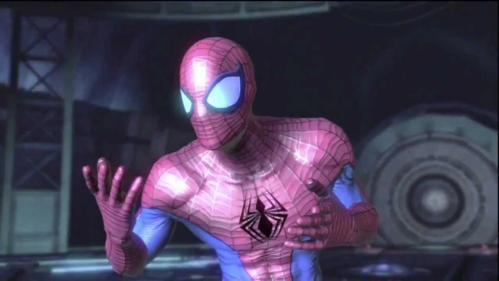
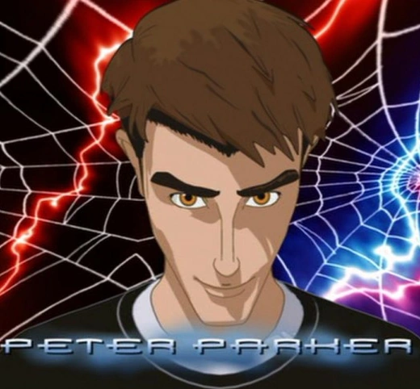
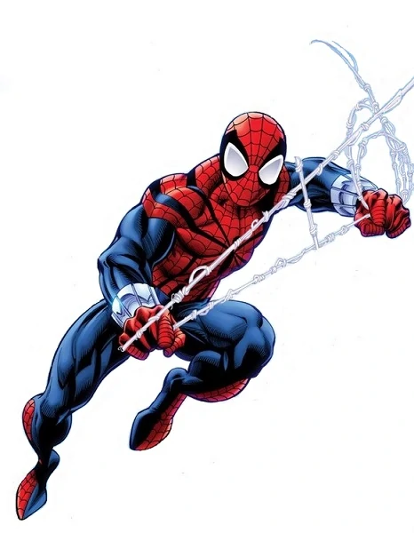

Peter Parker (of Earth-TRN199 ) also known as Spider-Man is an alternate version of Peter Parker who works as an employee in Alchemax

Peter Parker (of Earth-760207 ) is the main protagonist of the show Spider-Man: The New Animated Series.

Benjamin Reilly (of Earth-94) is an alternate version of Ben Reilly that never stopped being Spider-Man after Peter Parker quit.